Synthetic data (dynamic barcoding)¶
We simulated a differentiation process over a bifurcation fork. In this simulation, cells are barcoded, and the barcodes could accumulate mutations, which we call dynamic barcoding. In the simulation we resample clones over time, like the experimental design to obtain the hematopoietic dataset or the reprogramming dataset. The dataset has two time points.
[1]:
import cospar as cs
Initialization and Preprocessing¶
Loading data¶
[2]:
adata_orig=cs.datasets.synthetic_bifurcation_dynamic_BC()
try downloading from url
https://kleintools.hms.harvard.edu/tools/downloads/cospar/bifurcation_dynamic_BC_adata_preprocessed.h5ad
... this may take a while but only happens once
[3]:
adata_orig
[3]:
AnnData object with n_obs × n_vars = 1894 × 50
obs: 'time_info', 'state_info'
uns: 'clonal_time_points', 'data_des', 'state_info_colors'
obsm: 'X_clone', 'X_emb', 'X_pca'
[4]:
cs.pl.embedding(adata_orig,color='state_info')
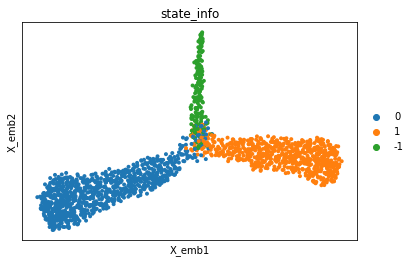
Raw clonal data analysis (without using state information)¶
[5]:
cs.pl.clones_on_manifold(adata_orig,selected_clone_list=[1])
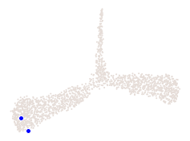
[6]:
plot_time_point='2'
cs.pl.fate_coupling_from_clones(adata_orig,plot_time_point, selected_fates=[], color_bar=True)
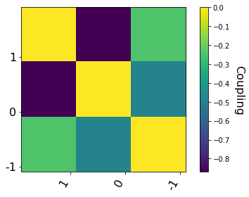
[7]:
plot_time_point='2'
cs.pl.barcode_heatmap(adata_orig,plot_time_point, selected_fates=[], color_bar=True)
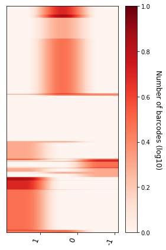
[8]:
select_fate_cluster='1'
clonal_fate_bias,clone_id=cs.pl.clonal_fate_bias(adata_orig,select_fate_cluster,N_resampling=100)
Current clone id: 0
Current clone id: 5
Current clone id: 10
Current clone id: 15
Current clone id: 20
Current clone id: 25
Current clone id: 30
Current clone id: 35
Current clone id: 40
Current clone id: 45
Current clone id: 50
Current clone id: 55
Current clone id: 60
Current clone id: 65
Current clone id: 70
Current clone id: 75
Current clone id: 80
Current clone id: 85
Current clone id: 90
Current clone id: 95
Current clone id: 100
Current clone id: 105
Current clone id: 110
Current clone id: 115
Current clone id: 120
Current clone id: 125
Current clone id: 130
Current clone id: 135
Current clone id: 140
Current clone id: 145
Current clone id: 150
Current clone id: 155
Current clone id: 160
Current clone id: 165
Current clone id: 170
Current clone id: 175
Current clone id: 180
Current clone id: 185
Current clone id: 190
Current clone id: 195
Current clone id: 200
Current clone id: 205
Current clone id: 210
Current clone id: 215
Current clone id: 220
Current clone id: 225
Current clone id: 230
Current clone id: 235
Current clone id: 240
Current clone id: 245
Current clone id: 250
Current clone id: 255
Current clone id: 260
Current clone id: 265
Current clone id: 270
Current clone id: 275
Current clone id: 280
Current clone id: 285
Current clone id: 290
Current clone id: 295
Current clone id: 300
Current clone id: 305
Current clone id: 310
Current clone id: 315
Current clone id: 320
Current clone id: 325
Current clone id: 330
Current clone id: 335
Current clone id: 340
Current clone id: 345
Current clone id: 350
Current clone id: 355
Current clone id: 360
Current clone id: 365
Current clone id: 370
Current clone id: 375
Current clone id: 380
Current clone id: 385
Current clone id: 390
Current clone id: 395
Current clone id: 400
Current clone id: 405
Current clone id: 410
Current clone id: 415
Current clone id: 420
Current clone id: 425
Current clone id: 430
Current clone id: 435
Current clone id: 440
Current clone id: 445
Current clone id: 450
Current clone id: 455
Current clone id: 460
Current clone id: 465
Current clone id: 470
Current clone id: 475
Current clone id: 480
Current clone id: 485
Current clone id: 490
Current clone id: 495
Current clone id: 500
Current clone id: 505
Current clone id: 510
Current clone id: 515
Current clone id: 520
Current clone id: 525
Current clone id: 530
Current clone id: 535
Current clone id: 540
Current clone id: 545
Current clone id: 550
Current clone id: 555
Current clone id: 560
Current clone id: 565
Current clone id: 570
Current clone id: 575
Current clone id: 580
Current clone id: 585
Current clone id: 590
Current clone id: 595
Current clone id: 600
Current clone id: 605
Current clone id: 610
Current clone id: 615
Current clone id: 620
Current clone id: 625
Current clone id: 630
Current clone id: 635
Current clone id: 640
Current clone id: 645
Current clone id: 650
Current clone id: 655
Current clone id: 660
Current clone id: 665
Current clone id: 670
Current clone id: 675
Current clone id: 680
Current clone id: 685
Current clone id: 690
Current clone id: 695
Current clone id: 700
Current clone id: 705
Current clone id: 710
Current clone id: 715
Current clone id: 720
Current clone id: 725
Current clone id: 730
Current clone id: 735
Current clone id: 740
Current clone id: 745
Current clone id: 750
Current clone id: 755
Current clone id: 760
Current clone id: 765
Current clone id: 770
Current clone id: 775
Current clone id: 780
Current clone id: 785
Current clone id: 790
Current clone id: 795
Current clone id: 800
Current clone id: 805
Current clone id: 810
Current clone id: 815
Current clone id: 820
Current clone id: 825
Current clone id: 830
Current clone id: 835
Current clone id: 840
Current clone id: 845
Current clone id: 850
Current clone id: 855
Current clone id: 860
Current clone id: 865
Current clone id: 870
Current clone id: 875
Current clone id: 880
Current clone id: 885
Current clone id: 890
Current clone id: 895
Current clone id: 900
Current clone id: 905
Current clone id: 910
Current clone id: 915
Current clone id: 920
Current clone id: 925
Current clone id: 930
Current clone id: 935
Current clone id: 940
Current clone id: 945
Current clone id: 950
Current clone id: 955
Current clone id: 960
Current clone id: 965
Current clone id: 970
Current clone id: 975
Current clone id: 980
Current clone id: 985
Current clone id: 990
Current clone id: 995
Current clone id: 1000
Current clone id: 1005
Current clone id: 1010
Current clone id: 1015
Current clone id: 1020
Current clone id: 1025
Current clone id: 1030
Current clone id: 1035
Current clone id: 1040
Current clone id: 1045
Current clone id: 1050
Current clone id: 1055
Current clone id: 1060
Current clone id: 1065
Current clone id: 1070
Current clone id: 1075
Current clone id: 1080
Current clone id: 1085
Current clone id: 1090
Current clone id: 1095
Current clone id: 1100
Current clone id: 1105
Current clone id: 1110
Current clone id: 1115
Current clone id: 1120
Current clone id: 1125
Current clone id: 1130
Current clone id: 1135
Current clone id: 1140
Current clone id: 1145
Current clone id: 1150
Current clone id: 1155
Current clone id: 1160
Current clone id: 1165
Current clone id: 1170
Current clone id: 1175
Current clone id: 1180
Current clone id: 1185
Current clone id: 1190
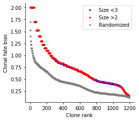
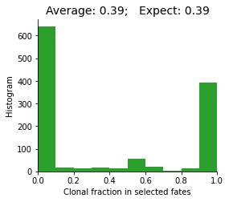
Transition map inference¶
Transition map from multiple clonal time points.¶
[9]:
use_full_Smatrix=True
noise_threshold=0.2 #
selected_clonal_time_points=['1','2']
adata=cs.tmap.infer_Tmap_from_multitime_clones(adata_orig,selected_clonal_time_points,smooth_array=[10,10,10],
CoSpar_KNN=20,noise_threshold=noise_threshold,demulti_threshold=noise_threshold,
use_full_Smatrix=use_full_Smatrix,use_all_cells=False)
-------Step 1: Select time points---------
--> Clonal cell fraction (day 1-2): 0.6891891891891891
--> Clonal cell fraction (day 2-1): 0.6954397394136808
--> Numer of cells that are clonally related -- day 1: 459 and day 2: 854
Valid clone number 'FOR' post selection 664
Cell number=1313, Clone number=1250
-------Step 2: Compute the full Similarity matrix if necessary---------
Compute similarity matrix: computing new; beta=0.1
Smooth round: 1
--> Time elapsed: 0.005765199661254883
Smooth round: 2
--> Time elapsed: 0.04189419746398926
--> Orignal sparsity=0.20817922210860954, Thresholding
--> Final sparsity=0.19417261646571343
similarity matrix truncated (Smooth round=2): 0.07763195037841797
Smooth round: 3
--> Time elapsed: 0.11136007308959961
--> Orignal sparsity=0.38404861012768604, Thresholding
--> Final sparsity=0.3351262643439127
similarity matrix truncated (Smooth round=3): 0.06285476684570312
Smooth round: 4
--> Time elapsed: 0.16349005699157715
--> Orignal sparsity=0.4768350897459771, Thresholding
--> Final sparsity=0.4027396023010474
similarity matrix truncated (Smooth round=4): 0.08010601997375488
Smooth round: 5
--> Time elapsed: 0.1728661060333252
--> Orignal sparsity=0.5275939469831369, Thresholding
--> Final sparsity=0.45277060109789263
similarity matrix truncated (Smooth round=5): 0.06105303764343262
Save the matrix~~~
Smooth round: 6
--> Time elapsed: 0.26447272300720215
--> Orignal sparsity=0.5694367474010631, Thresholding
--> Final sparsity=0.4926809945038464
similarity matrix truncated (Smooth round=6): 0.07140564918518066
Smooth round: 7
--> Time elapsed: 0.21038579940795898
--> Orignal sparsity=0.608515860121832, Thresholding
--> Final sparsity=0.5261845052848488
similarity matrix truncated (Smooth round=7): 0.0694112777709961
Smooth round: 8
--> Time elapsed: 0.23746991157531738
--> Orignal sparsity=0.6446768486935345, Thresholding
--> Final sparsity=0.5550340150466821
similarity matrix truncated (Smooth round=8): 0.07171773910522461
Smooth round: 9
--> Time elapsed: 0.2531599998474121
--> Orignal sparsity=0.6754060786633497, Thresholding
--> Final sparsity=0.5813643150325208
similarity matrix truncated (Smooth round=9): 0.06805682182312012
Smooth round: 10
--> Time elapsed: 0.26459193229675293
--> Orignal sparsity=0.7013976777663917, Thresholding
--> Final sparsity=0.6061248827788303
similarity matrix truncated (Smooth round=10): 0.06914997100830078
Save the matrix~~~
-------Step 3: Optimize the transition map recursively---------
---------Compute the transition map-----------
Compute similarity matrix: load existing data
--> Time elapsed: 0.005687713623046875
--> Time elapsed: 0.009057044982910156
--> Time elapsed: 0.00498199462890625
--> Time elapsed: 0.010453939437866211
Compute similarity matrix: load existing data
--> Time elapsed: 0.0034210681915283203
--> Time elapsed: 0.010492086410522461
--> Time elapsed: 0.0028977394104003906
--> Time elapsed: 0.012233257293701172
Compute similarity matrix: load existing data
--> Time elapsed: 0.0038161277770996094
--> Time elapsed: 0.00858306884765625
--> Time elapsed: 0.0037457942962646484
--> Time elapsed: 0.008623123168945312
Current iteration: 0
Use smooth_round=10
Clone normalization
--> Relative time point pair index: 0
--> Clone id: 0
--> Clone id: 1000
Start to smooth the refined clonal map
Phase I: time elapsed -- 0.002910137176513672
Phase II: time elapsed -- 0.0061740875244140625
Current iteration: 1
Use smooth_round=10
Clone normalization
--> Relative time point pair index: 0
--> Clone id: 0
--> Clone id: 1000
Start to smooth the refined clonal map
Phase I: time elapsed -- 0.004522085189819336
Phase II: time elapsed -- 0.008304834365844727
Current iteration: 2
Use smooth_round=10
Clone normalization
--> Relative time point pair index: 0
--> Clone id: 0
--> Clone id: 1000
Start to smooth the refined clonal map
Phase I: time elapsed -- 0.0035140514373779297
Phase II: time elapsed -- 0.005897998809814453
No need for Final Smooth (i.e., clonally states are the final state space for Tmap)
----Demultiplexed transition map----
Clone normalization
--> Relative time point pair index: 0
--> Clone id: 0
--> Clone id: 1000
-----------Total used time: 11.509425163269043 s ------------
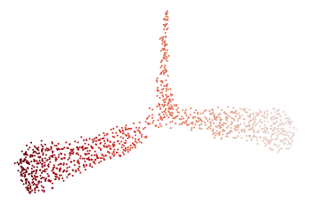
Generate demultiplexed map within each clone (Optional, as this map has been generated already)
[10]:
run_demultiplex=False
if run_demultiplex:
demulti_threshold=0.2 # This threshold should be smaller, ass the map has been further smoothed to expand to more states.
cs.tmap.infer_intraclone_Tmap(adata,demulti_threshold=demulti_threshold)
[11]:
cs.pl.fate_bias_from_binary_competition(adata,selected_fates=['0','1'],used_map_name='transition_map',
plot_time_points=[],plot_target_state=False,map_backwards=True,sum_fate_prob_thresh=0)
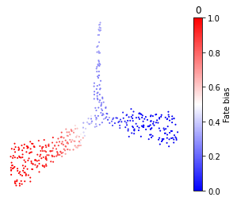
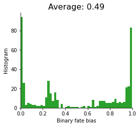
Transition map from a single clonal time point¶
[12]:
initial_time_points=['1']
clonal_time_point='2'
adata=cs.tmap.infer_Tmap_from_one_time_clones(adata_orig,initial_time_points,clonal_time_point,
Clone_update_iter_N=1,initialize_method='OT',smooth_array=[10,10,10],
noise_threshold=0.2,compute_new=False)
-------------------------------New Start--------------------------------------------------
Current time point: 1
-----------Pre-processing and sub-sampling cells------------
----------------
Step 1: Use OT method for initialization
Compute new shortest path distance matrix
--> Chosen mode is distances
Finishing computing shortest-path distance, used time 1.8133256435394287
Compute new custon OT matrix
OT solver: duality_gap
Finishing computing optial transport map, used time 2.0744729042053223
----------------
Step 2: Jointly optimize the transition map and the initial clonal states!
Joint optimization that consider possibility of clonal overlap: v2
--> original clone shape: (1894, 1669)
--> After excluding zero-sized clones at t2: (1894, 1334)
Sort clones by size (small to large)
Infer the number of initial cells to extract for each clone in advance
--> Inferring early clonal states: current clone id 0
--> Inferring early clonal states: current clone id 100
--> Inferring early clonal states: current clone id 200
--> Inferring early clonal states: current clone id 300
--> Inferring early clonal states: current clone id 400
--> Inferring early clonal states: current clone id 500
--> Inferring early clonal states: current clone id 600
--> Inferring early clonal states: current clone id 700
--> Inferring early clonal states: current clone id 800
--> Inferring early clonal states: current clone id 900
--> Inferring early clonal states: current clone id 1000
---------Compute the transition map-----------
Compute similarity matrix: computing new; beta=0.1
Smooth round: 1
--> Time elapsed: 0.0042688846588134766
Smooth round: 2
--> Time elapsed: 0.026350021362304688
--> Orignal sparsity=0.20817922210860954, Thresholding
--> Final sparsity=0.19417261646571343
similarity matrix truncated (Smooth round=2): 0.04873490333557129
Smooth round: 3
--> Time elapsed: 0.10690093040466309
--> Orignal sparsity=0.38404861012768604, Thresholding
--> Final sparsity=0.3351262643439127
similarity matrix truncated (Smooth round=3): 0.053813934326171875
Smooth round: 4
--> Time elapsed: 0.14299798011779785
--> Orignal sparsity=0.4768350897459771, Thresholding
--> Final sparsity=0.4027396023010474
similarity matrix truncated (Smooth round=4): 0.06744098663330078
Smooth round: 5
--> Time elapsed: 0.1661691665649414
--> Orignal sparsity=0.5275939469831369, Thresholding
--> Final sparsity=0.45277060109789263
similarity matrix truncated (Smooth round=5): 0.06412506103515625
Save the matrix~~~
Smooth round: 6
--> Time elapsed: 0.20180201530456543
--> Orignal sparsity=0.5694367474010631, Thresholding
--> Final sparsity=0.4926809945038464
similarity matrix truncated (Smooth round=6): 0.06461906433105469
Smooth round: 7
--> Time elapsed: 0.19090795516967773
--> Orignal sparsity=0.608515860121832, Thresholding
--> Final sparsity=0.5261845052848488
similarity matrix truncated (Smooth round=7): 0.06158709526062012
Smooth round: 8
--> Time elapsed: 0.27953195571899414
--> Orignal sparsity=0.6446768486935345, Thresholding
--> Final sparsity=0.5550340150466821
similarity matrix truncated (Smooth round=8): 0.07004117965698242
Smooth round: 9
--> Time elapsed: 0.2258460521697998
--> Orignal sparsity=0.6754060786633497, Thresholding
--> Final sparsity=0.5813643150325208
similarity matrix truncated (Smooth round=9): 0.07517480850219727
Smooth round: 10
--> Time elapsed: 0.26035118103027344
--> Orignal sparsity=0.7013976777663917, Thresholding
--> Final sparsity=0.6061248827788303
similarity matrix truncated (Smooth round=10): 0.07227110862731934
Save the matrix~~~
--> Time elapsed: 0.00563502311706543
--> Time elapsed: 0.015253067016601562
--> Time elapsed: 0.0025970935821533203
--> Time elapsed: 0.015963315963745117
Compute similarity matrix: load existing data
--> Time elapsed: 0.006258964538574219
--> Time elapsed: 0.015415191650390625
--> Time elapsed: 0.004996299743652344
--> Time elapsed: 0.015640735626220703
Compute similarity matrix: load existing data
--> Time elapsed: 0.005293130874633789
--> Time elapsed: 0.012995243072509766
--> Time elapsed: 0.0018811225891113281
--> Time elapsed: 0.013762712478637695
Current iteration: 0
Use smooth_round=10
Clone normalization
--> Relative time point pair index: 0
--> Clone id: 0
--> Clone id: 1000
Start to smooth the refined clonal map
Phase I: time elapsed -- 0.003561258316040039
Phase II: time elapsed -- 0.004846096038818359
Current iteration: 1
Use smooth_round=10
Clone normalization
--> Relative time point pair index: 0
--> Clone id: 0
--> Clone id: 1000
Start to smooth the refined clonal map
Phase I: time elapsed -- 0.0029990673065185547
Phase II: time elapsed -- 0.0046923160552978516
Current iteration: 2
Use smooth_round=10
Clone normalization
--> Relative time point pair index: 0
--> Clone id: 0
--> Clone id: 1000
Start to smooth the refined clonal map
Phase I: time elapsed -- 0.002672910690307617
Phase II: time elapsed -- 0.003962039947509766
Final round of Smooth (to expand the state space of Tmap to include non-clonal states)
Phase I: time elapsed -- 0.002897024154663086
Phase II: time elapsed -- 0.005712985992431641
----Demultiplexed transition map----
Clone normalization
--> Relative time point pair index: 0
--> Clone id: 0
--> Clone id: 1000
Finishing computing transport map from CoSpar using inferred clonal data, used time 8.200721025466919
-----------Total used time: 12.179482698440552 s ------------
[13]:
cs.pl.fate_bias_from_binary_competition(adata,selected_fates=['0','1'],used_map_name='transition_map',
plot_time_points=[],plot_target_state=False,map_backwards=True,sum_fate_prob_thresh=0)
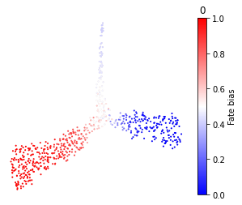
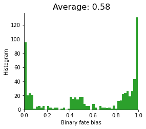
Transition amp from only the clonal information¶
[15]:
cs.tmap.infer_Tmap_from_clonal_info_alone(adata)
cs.pl.fate_bias_from_binary_competition(adata,selected_fates=['0','1'],used_map_name='clonal_transition_map',
plot_time_points=[],plot_target_state=False,map_backwards=True,sum_fate_prob_thresh=0)
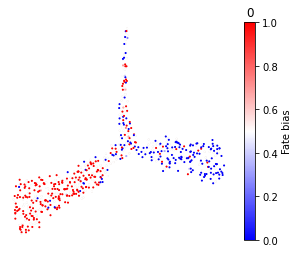
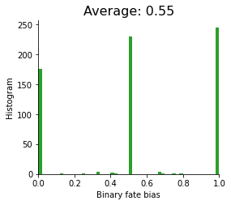